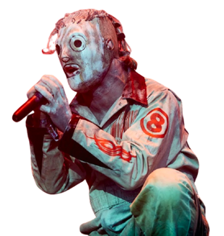
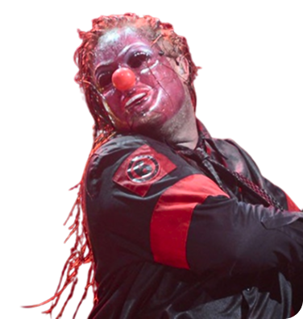
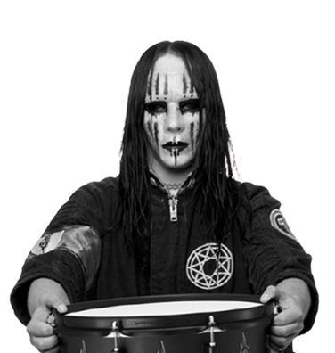
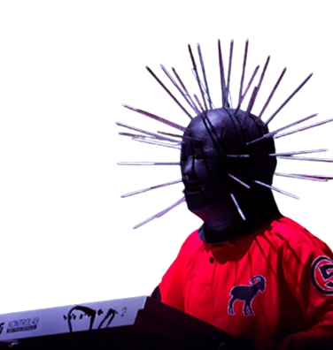
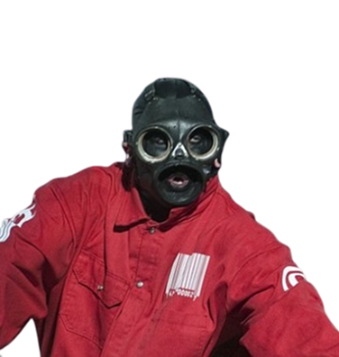
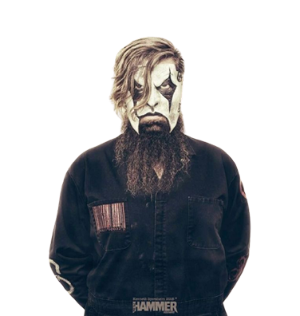
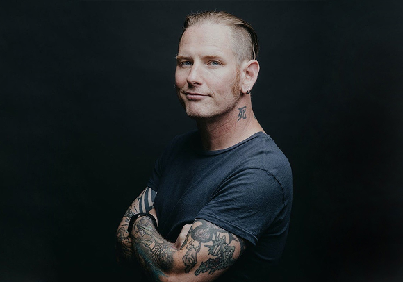
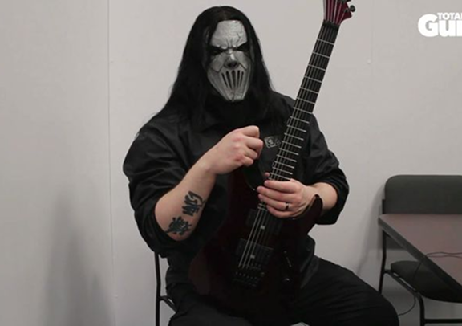
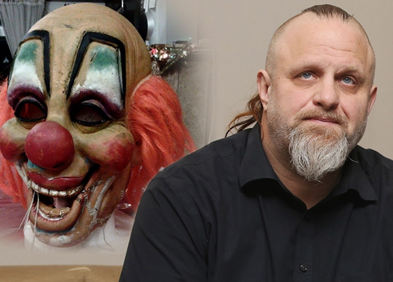

О группе
Slipknot — одна из самых культовых метал-групп современности, известная своей агрессивной музыкой, мрачной эстетикой и фирменными масками. Группа была основана в 1995 году в Де-Мойне, штат Айова

Состав группы
Основателями стали перкуссионисты Шон "Clown" Крэхан, барабанщик Джои Джордисон и басист Пол Грей. Позже к ним присоединились гитаристы Мик Томсон и Джим Рут, вокалист Кори Тейлор и др.
-

Кори Тейлор
-

Шон Крэхан
-

Джои Джордисон
-

Крэйг Джонс
-

Сид Уилсон
-

Джеймс Рут
Интересные факты о группе
-
Каждому участнику группы присвоен свой порядковый номер (от 0 до 8).
-
Шон "Clown" Крэхан – единственный участник, который остается в группе с момента основания.
-
Кори Тейлор однажды упал во время выступления и продолжил петь, лежа на сцене.
Интервью
-

Кори Тейлор о новом альбоме и будущем группы (2023)
-

Мик Томсон о гитарном звучании Slipknot, первая часть
-

Шон Крэхан о значении масок и визуального стиля